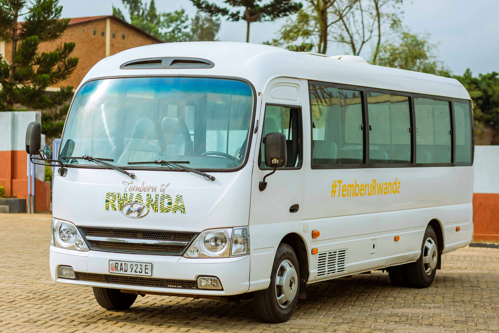

Transportation
Most visitors arrive to Taniti by air, though some arrive by cruise ship. Once on the island, travelers have several ways to get around.

Arriving on the Island
Taniti is served by a small airport that currently accommodates small jets and propeller planes. A small cruise ship also docks in Yellow Leaf Bay one night each week.
Ground Transportation
Public buses serve Taniti City from 5:00 a.m. to 11:00 p.m. daily, while private buses serve other parts of the island.
Other Ways to Travel
Visitors can also use taxis, rental cars near the airport, or rent bikes and helmets from several vendors.
Taniti City is fairly flat and very walkable. Many tourists also stay near Merriton Landing, which is easy to explore on foot.
Back to Home